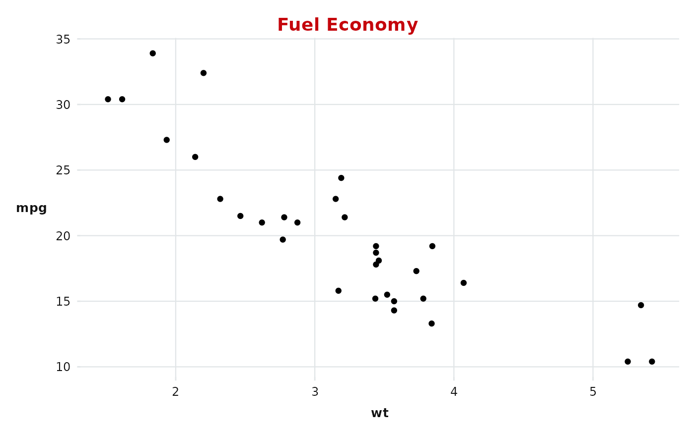
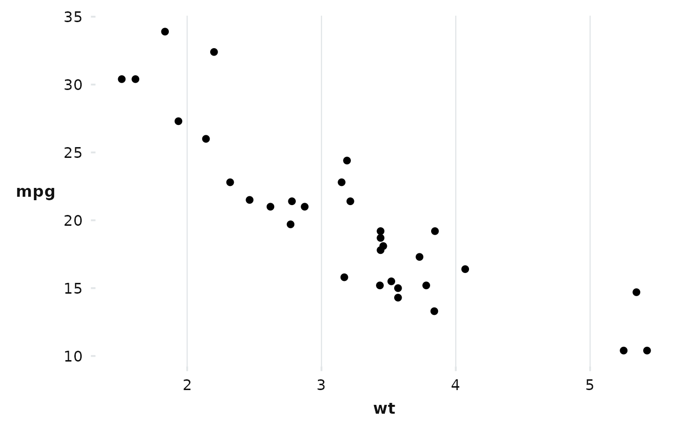

Applies the UW–Madison brand identity to a ggplot2 plot:
Red Hat Display for titles and facet strip labels
Red Hat Text for axis labels, legend text, and captions
Crimson Pro (or
base_family) for all other textBadger Red title and facet strip background
Light gray grid lines on a white panel
Usage
theme_uw(
base_size = 11,
base_family = "Crimson Pro",
title_color = "badger_red",
grid = c("both", "x", "y", "none"),
...
)Arguments
- base_size
Base font size in points. Default
11.- base_family
Base font family for body text. Default
"Crimson Pro". Use"Red Hat Text"for a pure sans-serif body.- title_color
Color for the plot title. Accepts a name from uw_colors or any hex string. Default
"badger_red".- grid
Which major grid lines to show. One of
"both"(default),"x","y", or"none".- ...
Additional arguments passed to
ggplot2::theme().
Value
A ggplot2::theme() object.
Examples
ggplot2::ggplot(mtcars, ggplot2::aes(wt, mpg)) +
ggplot2::geom_point() +
ggplot2::labs(title = "Fuel Economy") +
theme_uw()

# Grid on x axis only, larger base size
ggplot2::ggplot(mtcars, ggplot2::aes(wt, mpg)) +
ggplot2::geom_point() +
theme_uw(base_size = 14, grid = "x")
